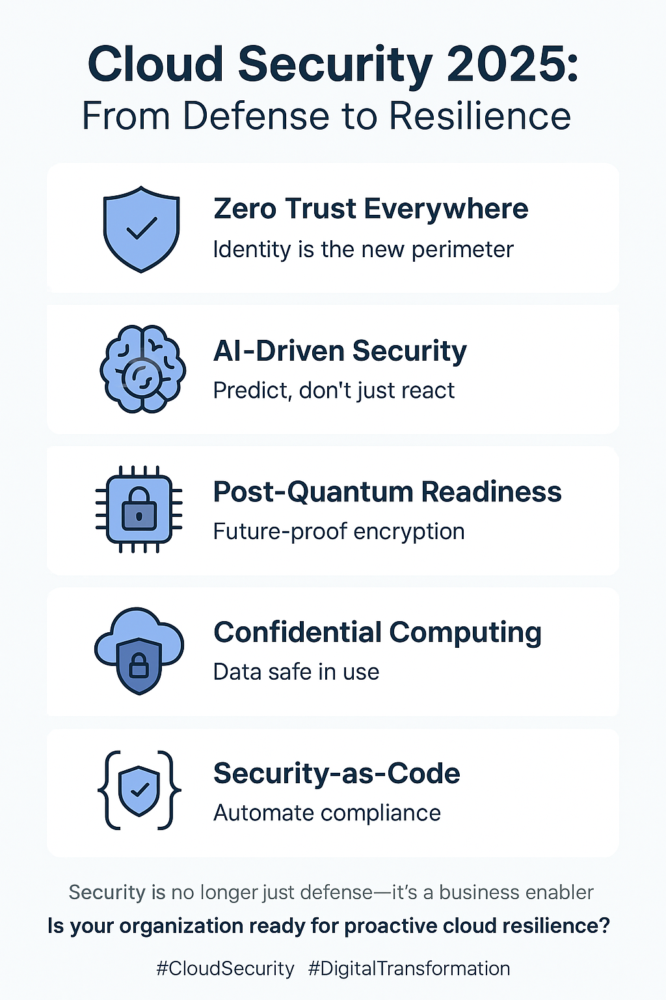

By Pankaj Kumar
Cloud Security Trends in 2025: From Reactive Defense to Proactive Resilience
It’s 2 a.m. and your cloud dashboard blinks red. Instead of a war room, your AI-driven security fabric has already
isolated the anomaly, rerouted traffic, and logged the evidence. That’s 2025 — where speed, intelligence, and resilience
define the new battleground.
Background & Relevance
Security has moved from an afterthought to the frontline of trust for enterprises, regulators, and customers. With
multi-cloud, AI workloads, and hybrid IT now the norm, the objective isn’t just protection — it’s turning security into
a business enabler that accelerates delivery, reduces risk, and builds confidence with stakeholders.
For leaders, this is a board-level conversation about reputation, regulation, and resilience. For IT managers, it’s the
balancing act between agility and compliance. For engineers, it’s the shift to a security-first mindset woven into
architecture, pipelines, and operations.
Core Technical Themes — Demystified
- AI-driven threat detection: Cloud-native SIEM/XDR evolve from reactive alerts to predictive defense,
correlating telemetry, spotting anomalies early, and triggering automated containment.
- Zero Trust everywhere: Identity becomes the perimeter. Assume breach, verify each request, apply least-privilege
for users, services, and workloads across clouds and on-prem.
- Post-quantum readiness: Start piloting quantum-safe algorithms and inventory long-lived sensitive data
that will require migration to PQC over time.
- Confidential computing: Protect data in use with secure enclaves/TEEs so high-value workloads
stay shielded during processing, not only at rest or in transit.
- Security-as-code: Express controls in Terraform/Policy-as-Code and bake checks into CI/CD so evidence
is generated continuously and drift is eliminated.
Think of it like upgrading from a sturdy lock to a smart security system — it doesn’t just block intruders; it predicts and prevents.
Leadership Perspective (cross-industry)
Leading large-scale transformations across banking, energy, and manufacturing taught me that security succeeds
when it’s part of the delivery fabric. Embedding IAM, governance, and automated evidence into day-one pipelines satisfies
oversight and accelerates adoption. In regulated environments, automation cut manual reporting by ~30% while improving
real-time risk visibility — enabling zero-outage execution with airtight compliance.
The takeaway: security isn’t a side function; it’s a delivery outcome.
Practical Moves
- Default to Zero Trust: Establish strong identity foundations (MFA, workload identity), micro-segmentation,
and continuous verification for users and services.
- Automate compliance: Use policy-as-code and dashboards to produce audit-ready evidence on demand.
Integrate checks into pull requests and pipelines.
- Confidential computing & encryption: Prioritize enclaves/TEEs for high-value workloads and ensure
end-to-end encryption with robust key management.
- DevSecOps by design: Security gates, secrets scanning, SBOMs, and runtime protections built into delivery —
not bolted on after release.
- Drill regularly: Run red-team and tabletop exercises, and maintain battle-tested recovery runbooks to
build organizational muscle memory.
Trends, Predictions & Call-to-Action
Expect autonomous security frameworks to mature: systems that learn from attacks, remediate proactively,
and maintain a continuous trail of evidence for auditors. Organizations that embrace this posture will win on trust,
compliance, and customer confidence.
👉 How is your organization preparing for AI-driven, multi-cloud security in 2025?
Top 5 Cloud Security Trends in 2025

Key Takeaways
- Security is shifting from reactive defense to proactive, AI-driven resilience.
- Zero Trust + security-as-code + confidential computing form the 2025 baseline.
- Leaders succeed by embedding controls, automating evidence, and measuring outcomes.